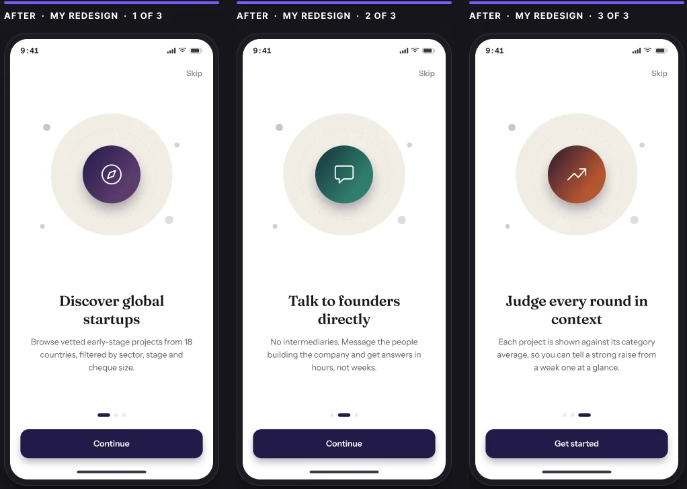
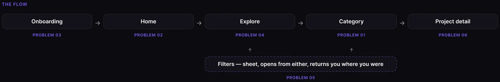
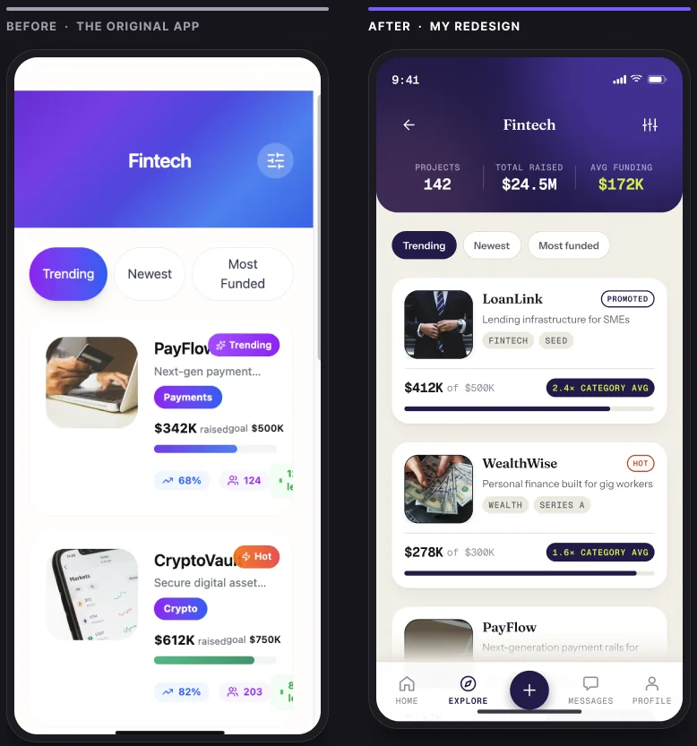
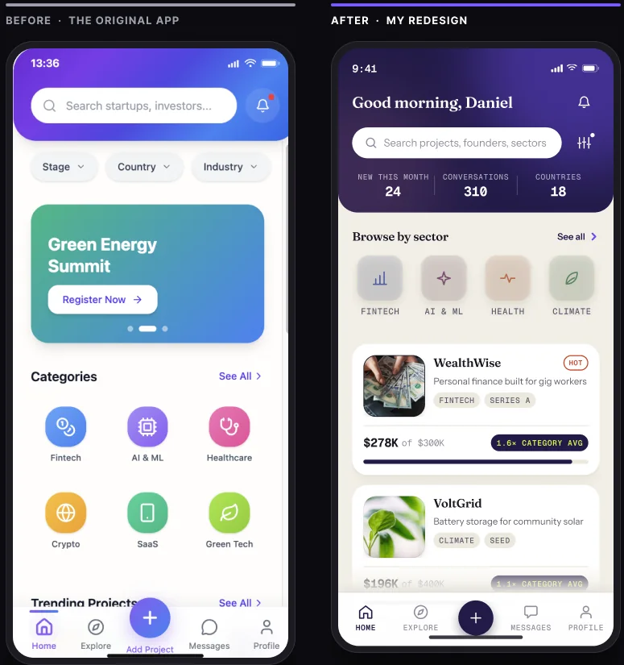
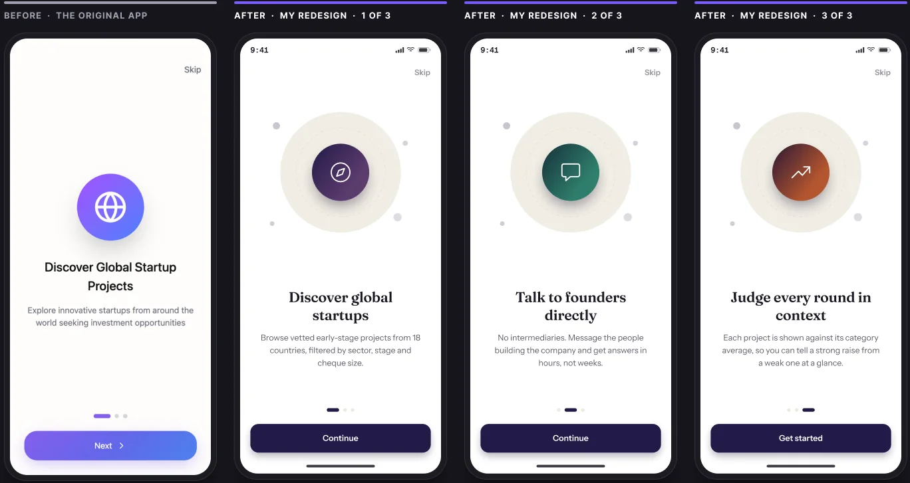
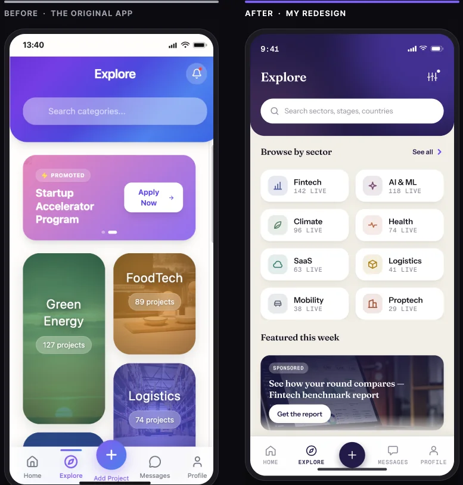
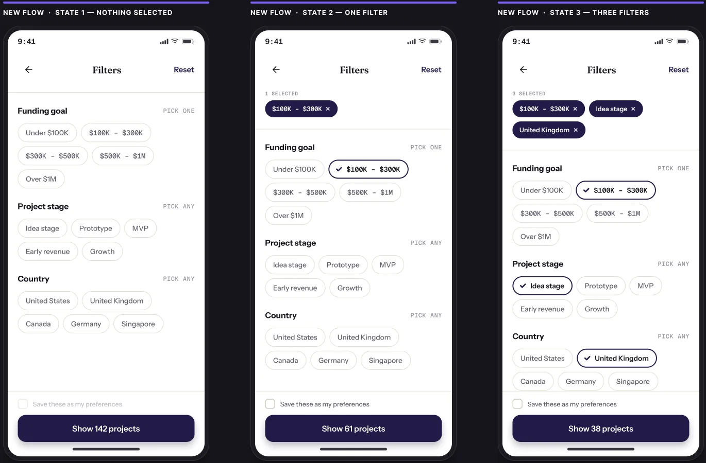
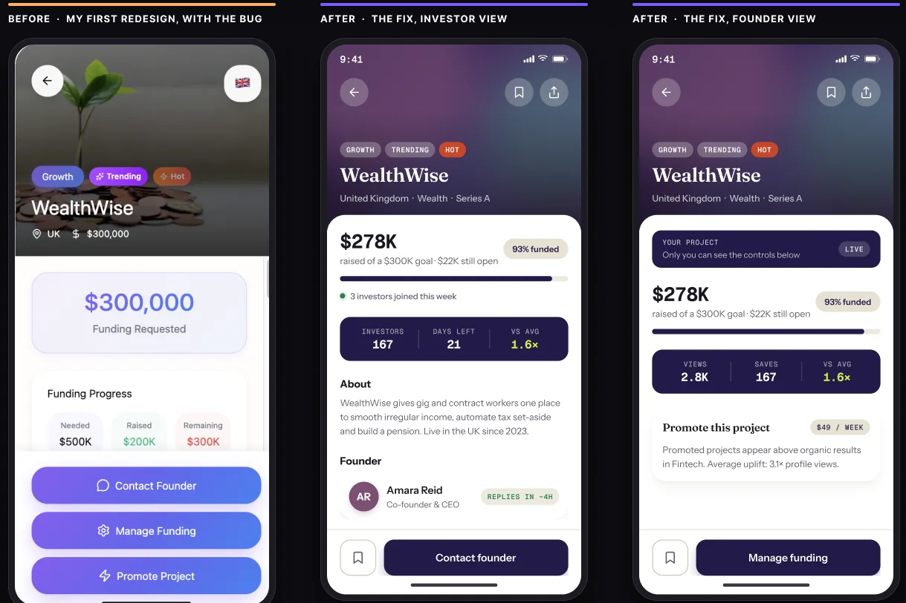
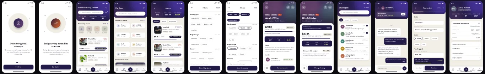

02 · Fintech marketplace · Shipped
Making a marketplace feel liquid.
A mobile marketplace where early-stage founders publish projects and investors browse, compare and message them. Almost every problem traced back to one app built for one user, when it is structurally two. I redesigned it as a decision log: for every change, what I saw, what I did, what it cost, and the number that would tell me I was wrong.

How to read this case
Every change below is a decision log, not a before-and-after.
Most redesign cases put a grey screen next to a purple one and call it progress. For each change here I state what I saw, what I inferred, what I did, what it cost, and the number that would tell me I was wrong.
What in the existing product told me something was wrong.
What I think is happening, and what it costs the business.
What I changed, kept to the smallest change that would do it.
What the change made worse. Every change makes something worse.
The metric that would tell me I was wrong.
If a decision has no cost, I didn't think about it hard enough. There are five costs written into this case, and one mistake of my own that I chose to keep in rather than crop out.
The product
One app, two opposite jobs to be done.
Founders publish projects with a funding goal; investors browse by industry, stage, geography and cheque size, then message the founder directly.
Fears being invisible in a long, unsorted list. Success is the first qualified message from an investor.
Fears wasting an evening on a dead or fake marketplace. Success is the first project worth reading twice.

The lens
I audited against four marketplace questions, not generic usability heuristics.
Can a new user tell within five seconds that this market is alive?
Given two listings, can the user tell which is the better opportunity?
How many taps from launch to a project worth reading twice?
Does the interface know which side of the market I'm on?
The product failed all four. What follows is ranked by cost to the business, not by the order I opened the screens.
Problem 01 · Category listing · Comparability
You could read a project. You couldn't judge one.
The decision I'd defend hardest, and the one I'd lead with in an interview.

The change
Three numbers in the category header
Total projects · Total raised · Avg funding
Now “$278K” has a denominator, and the card does the division for you: 1.6× the category average, learned in the same glance, with zero extra taps.
A three-number component that reframes every card beneath it. Small surface, large change in meaning: that ratio is what I look for before I add anything to a screen.
- Signal
- Listings showed raised-against-goal with a progress bar: $278K raised of a $300K goal. Clean, readable, well-formatted, and completely uninterpretable.
- Hypothesis
- $278K is a number without a denominator. An investor's core task isn't reading a listing, it's ranking listings, and the original optimised for the wrong verb. Building a benchmark meant scrolling a dozen projects and averaging them mentally. Most won't: they bounce, or take the first plausible option.
- Decision
- A market summary bar in every category header (142 projects, $24.5M raised, $172K average) so each vertical carries its benchmark before the first card. Then every card states its own multiple of that average, so the comparison happens without holding a number in your head.
- Cost
- Three, and I'll take all three. The header grew, pushing the first card down, which raises the stakes on sort quality. Averages hide distribution: one $5M outlier makes $172K a lie, so a real build uses the median. And the figure is only as honest as the platform that reports it.
- Proof
- Detail-page views per session, and return-to-list-after-detail as a proxy for “this wasn't what I expected”. If the benchmark works, users open fewer detail pages but message founders more often: better targeting, not more browsing.
Problem 02 · Home · Liquidity
The app asked me to filter a market I hadn't seen yet.
Filters are a refinement tool. They assume a mental model the first-time user does not have.

The change
A liquidity band, not a filter bar
New projects this month · Conversations started · Countries involved
Activity metrics, deliberately, not inventory metrics. “1,200 projects listed” is a number a dead marketplace can also show. “12 conversations started this month” is not.
Perceived liquidity is the first trust factor in any marketplace. The original spent its best real estate on empty form controls instead.
- Signal
- Home opened with a search field and three dropdown filters (Stage, Country, Industry) above everything else. Categories and Trending Projects sat below the fold.
- Hypothesis
- The cold-start problem, designed in. A first-time investor doesn't know whether “Seed” means ten projects or ten thousand, so the rational response to three empty dropdowns is to do nothing, and on a home screen doing nothing means leaving.
- Decision
- The dropdowns became a liquidity band. Filtering moved to the surfaces that have a list to refine: Explore, category headers, and one control beside Home's search carrying a count. Three empty dropdowns demand a query; one control with a count reports a state and waits.
- Cost
- On a young marketplace the band can damage trust: a small number shown confidently reads worse than none, so it needs a floor rule and a forward-looking fallback. And personalised defaults narrow the market silently, so the criteria are stated in plain language and Explore stays unfiltered one tap away.
- Proof
- Time-to-first-project-detail and Home bounce rate. For the personalised default, the share of sessions where the investor overrides it: healthy means useful but not a cage; near zero means the bubble has closed.
Problem 03 · Onboarding · Path to first value
Onboarding sold one third of the product.
One screen, and a pagination indicator showing three dots. The interface was promising a story that did not exist.

The change
Three screens, three jobs, and a promise the product keeps
Discover · Connect · Judge
One icon, one line, one sentence each, with a distinct gradient per step so progress is felt rather than read off the dots.
The final button changes from “Continue” to “Get started”: the label carries the state change.
- Signal
- A single onboarding screen, “Discover Global Startup Projects”, carrying a pagination indicator that showed three dots.
- Hypothesis
- The copy described only supply. It said nothing about the two things that differentiate the product: talking to founders directly, and getting in early. Someone who thinks this is a directory expects something different from someone who knows it is a conversation channel, and that mismatch surfaces later as drop-off that looks like a UI problem.
- Decision
- Three screens, one job each: Discover (supply exists), Talk to founders (the differentiator), Judge every round in context. That third screen used to read “Invest with Confidence”, which commits to nothing. It now names the benchmark the product actually delivers.
- Cost
- Three screens is more friction than one. Skip persists on every screen, copy is capped at one sentence, and there is no account gate. If screen two or three causes drop, I'd cut to two rather than compress three into a wall of text.
- Proof
- Per-screen completion and skip rate. A high skip rate isn't automatically failure; what matters is whether skippers convert to a first founder message at the same rate as completers. If they do, the onboarding is theatre and I'd cut it.
Problem 04 · Explore · False hierarchy
The prettiest screen was the wrong one.
Mixed tile sizes encode a hierarchy. These sizes were driven by layout rhythm, not by data.

The change
Mosaic → equal-weight grid
Equal weight · real counts · scales past forty
Every tile is the same size and carries its real project count, so the layout stops claiming Green Energy matters more than Logistics when the only reason it did was layout rhythm.
The one screen where deliberate search belongs was the one screen with no filters at all. That flow is next.
- Signal
- Explore used a mosaic of category tiles at mixed sizes, each with a project count. Visually the strongest screen in the original app.
- Hypothesis
- A bigger tile reads as more important, but these sizes came from layout rhythm, not data, so the layout was making a promise nothing backed. And Explore had no filters at all: a user wanting UK fintech at idea stage had no path anywhere in the product.
- Decision
- Mosaic to a two-column grid at identical tile size, each with its real project count, so any hierarchy the reader sees is one the data supports. The missing Filters flow was designed from scratch, and its entry moved into the header with a count of what's applied.
- Cost
- I traded visual distinctiveness for structural honesty, and the mosaic screenshot was prettier. One full-bleed promoted card sits below the grid: rich imagery, but in a slot where visual weight genuinely corresponds to intent.
- Proof
- Category tap distribution. If the mosaic was manufacturing hierarchy, taps flatten once tiles carry equal weight. If they don't, the sizes were accidentally correct, and I should encode that ordering deliberately.
Problem 05 · Filters · The missing flow
Filters that show their own state.
This screen did not exist. I designed it as three states rather than one screen, and then reversed my own first answer once I saw what the action could carry.

The change
The button carries the live count
Show 142 → 61 → 38 projects
Selections stay visible as removable chips above the list, so correcting is cheap and Reset drops to a last resort.
My first answer disabled Apply until something was chosen. It fixed the dead round-trip but still left you guessing what tapping would produce.
- Hypothesis
- Marketplace sessions die at the filter step in a specific way: the user applies something, gets a result they didn't expect, and cannot see what they asked for. The failure isn't the filter; it's the invisibility of the filter state.
- Decision
- Three states, and a reversal. The action now carries the live count: 142, then 61, then 38. Selected options stay lit in place and repeat as chips at the top, so the query reads twice: as a summary and in context.
- Cost
- The chip tray eats vertical space from the filter list and worsens with every filter, so I'd cap it at two rows with an overflow chip. And a live count means a query on every toggle, which needs debouncing and a stale-count state.
- Proof
- Filter abandon rate, and the share of sessions reaching zero results; the live count should drive both toward zero. If users still apply exactly one filter every time, this flow is over-engineered and belongs inline on Explore.
Problem 06 · Project detail · A mistake in my own redesign
The interface still didn't know who I was.
I'm including this rather than quietly cropping the screenshot. A portfolio that shows only decisions that worked isn't showing judgement; it's showing selection.

An investor should never see “Promote project” on someone else's listing. A founder viewing their own project should not be told to contact themselves. Shown together, my first stack was exactly the role-clarity failure I opened the audit by naming, reappearing in my own screens.
- Investor · any project
- Primary: Contact founder · Secondary: Save, Share
- Founder · own project
- Primary: Manage funding · Secondary: Promote, View as investor
- Founder · other project
- Primary: Contact founder · Secondary: Save
Same component, one ownership flag, three correct renders. The visual design didn't need to change. The logic did. That distinction is most of the job.
- Decision
- Split the action stack by role and ownership at render time rather than showing every possible action to everyone. The founder view goes further: performance metrics replace investor metrics, and “View as investor” lets the founder read their listing the way the market does.
- Cost
- Role-conditional UI multiplies the QA surface: three variants of one screen, each with its own empty, error and permission states. Building the founder view also opened a second product surface (creation, funding, promotion) that a listing-only redesign never had to answer for.
- Proof
- Mis-tap rate on secondary actions, and support contacts of the form “why can't I promote this”. Both should approach zero.
The business model
Monetisation, designed rather than bolted on.
The redesign introduces Sponsored and Promoted placements. A two-sided marketplace has to monetise one side, and it's almost always the supply side buying visibility. If the designer doesn't shape that, the growth team will, and it will arrive as a full-bleed interstitial.
Promoted listings use the identical card as organic ones. Placement is the paid variable, not visual volume.
“Sponsored” and “Promoted” are always present and always legible. Never a subtle tint the eye can miss.
A hard cap. Paid units that shout break the scan rhythm the whole listing design is built on.
This is the section most portfolios skip, which is exactly why I keep it. A designer who has only ever optimised for the user hasn't yet worked on a product that has to survive.
What I'd measure next
How I'd find out I was wrong.
- 01 — Comparison-test the category screen
- With and without the market summary bar. Task: pick the two most promising projects and say why. I'm measuring reasoning quality, not speed.
- 02 — Instrument the funnel
- Home → Category → Detail → Contact. The whole thesis of this redesign is that step two-to-three improves in quality. That single number decides whether the work was worth doing.
- 03 — Agree the metric floor rules
- For the liquidity band, with the founding team, in writing, not after someone notices the numbers look thin.
- 04 — Finish the component library
- The project card, stat band, chip, tab bar and filter row repeat across twelve screens. Icons are componentised and colour is fully tokenised, which is how the whole palette was re-themed in one edit. The rest should follow.
In short
Six problems, each with its cost and the number that would prove me wrong.
That's how I work on every product: reason about the decision, name the trade-off, and make the choice explicit, so the team can argue with it before the users do.
